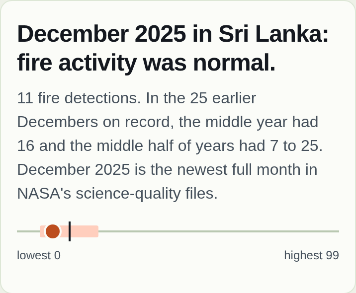
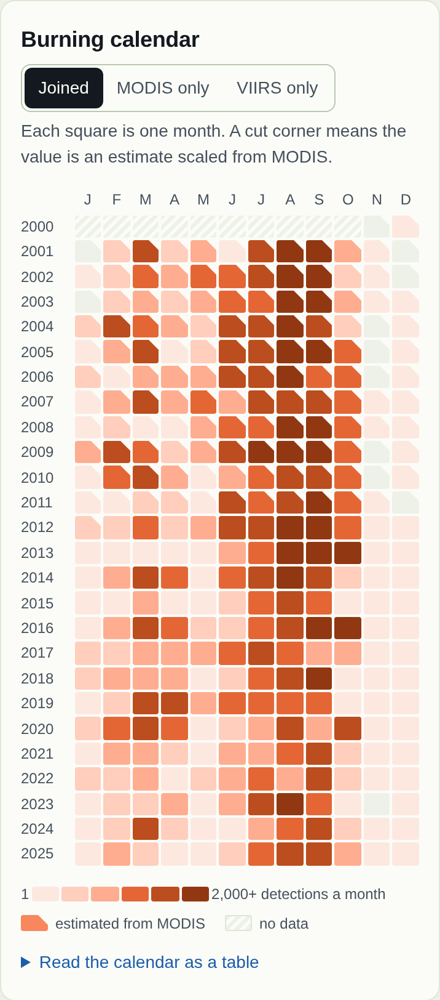
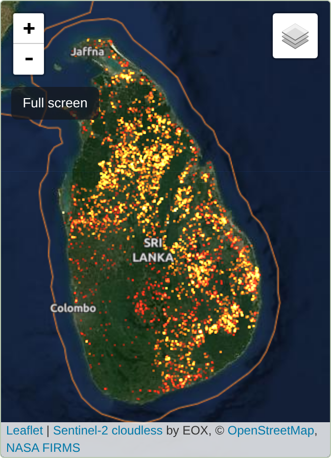
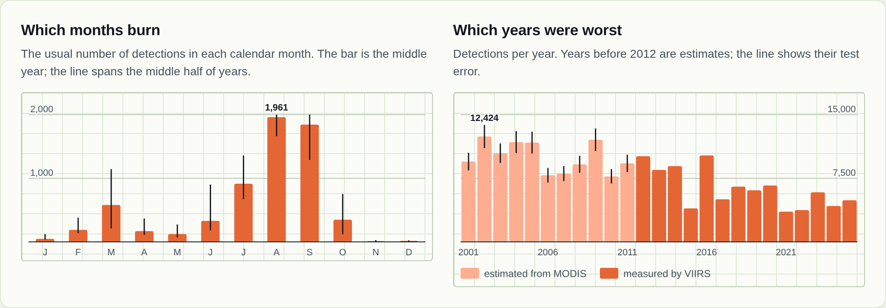

NASA's old and new fire satellites, joined into one tested 25-year record you can read on a phone.
MODIS (on Terra and Aqua) has watched fires since 2000 with 1 km pixels. VIIRS, since 2012, has 375 m pixels and sees smaller fires.
For the same burning, VIIRS reports 2.7 to 7.8 times more fire detections, depending on the country.
Now the record is breaking: Suomi NPP stopped on 2 November 2026, and Terra and Aqua begin shutting down from late 2026.
Put side by side, the old years look calmer than they were.
Sri Lanka, fire detections per year, as each sensor counted them. NASA FIRMS.


Is this month normal? One sentence, and the range of the same month in earlier years.
The burning calendar. Every month since 2000. A cut corner marks a month estimated from MODIS. Switch to see each sensor as it counted.
Works on a phone, with no login and no app.


Every fire NASA saw this year, on a sharp satellite map: newest brightest, tap one for its date, zoom to street level. Zoom to a district and every chart redraws for it. Download the record or the fires as CSV, or the map as a picture.
Average miss when a hidden year is rebuilt from MODIS, against what VIIRS really saw, 2012 to 2021.
Monthly factors beat one fixed factor on monthly values in all 8 countries. On yearly totals the two are close.
MODIS after 2022 drifts by up to 30%, so it is never used to learn the factors.
NASA data: FIRMS active fire detections from MODIS Collection 6.1 (Terra, Aqua) and VIIRS 375 m (Suomi NPP, NOAA-20), November 2000 to October 2026: 13.4 million detections read for 8 countries. NASA GIBS Blue Marble map.
Next: every country through the FIRMS API, each new month as it arrives, NOAA-21, day and night counted apart.
Limits we state: a detection is not a fire or a burned area; estimates carry a measured range; a small area uses its country's factors.
Try it
somasiriwar712-rgb.github.io/
one-fire-record
Code: github.com/
somasiriwar712-rgb/one-fire-record